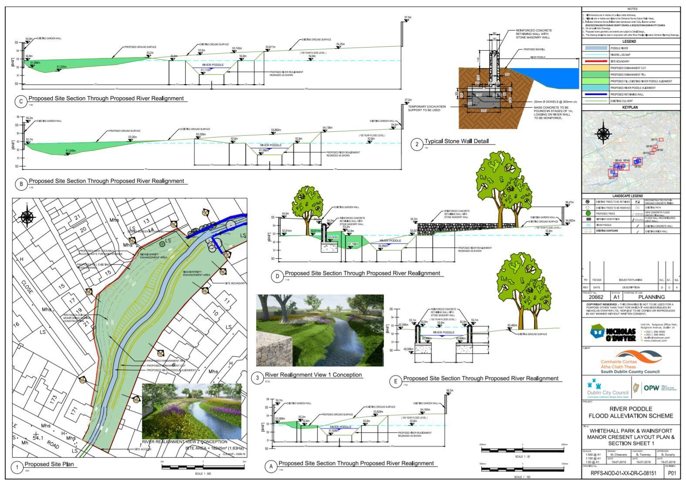
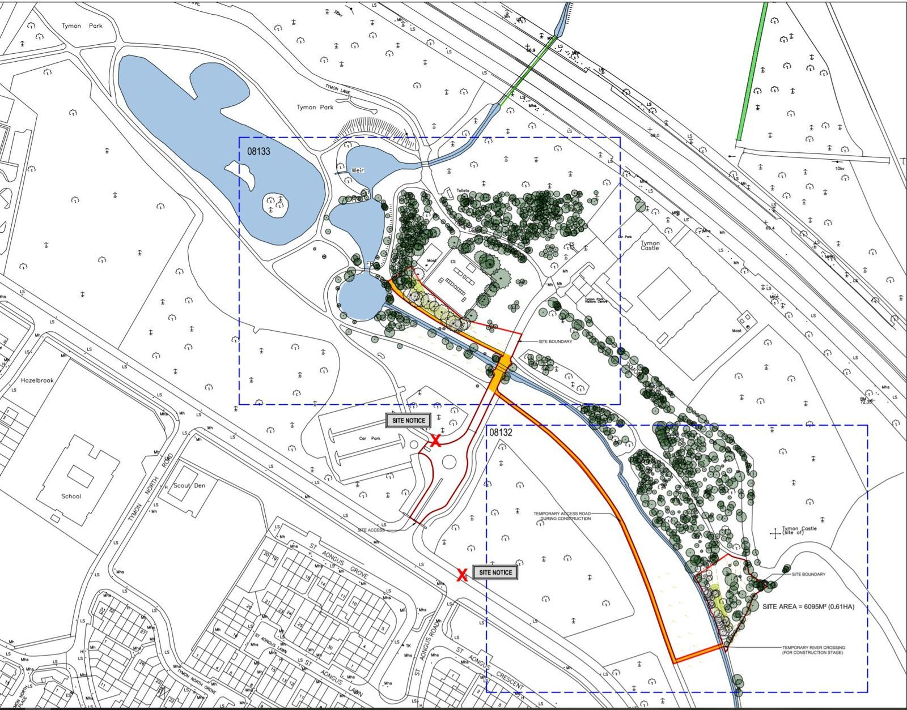

History · 1437 to 2027
Floods and the flood scheme
Six centuries of flooding, and the scheme being built to stop it.
A river that floods
The Poddle has always flooded. The cathedral records run from an inquiry in 1437 to boats being rowed past St Patrick’s in 1701. In the suburbs, serious floods struck Harold’s Cross and Kimmage in 1986, 1993, 2000, 2008 and 2011, and Blackpitts flooded during Hurricane Charlie in 1986.
24 October 2011
On the evening of 24 October 2011, between 80 and 90mm of rain fell on Dublin in six hours. The Poddle burst its banks at Tallaght, Kimmage, Harold’s Cross and Mount Jerome. Across the Dublin region about 1,000 properties flooded, 318 roads were badly flooded, power was lost, and two people died. Both South Dublin County Council and Dublin City Council activated their major emergency plans, and insurance claims were estimated at €127 million.
The River Poddle Flood Alleviation Scheme
The scheme is a joint project of South Dublin County Council, Dublin City Council and the Office of Public Works, which funds it. It is designed to protect more than 800 properties against a 1-in-100-year flood, with an allowance for climate change. The estimated cost was €7 million in 2020, revised to €10 million by 2023.
Its main idea is to store water upstream rather than build high walls in the city. Tymon Lake becomes a flood reservoir behind a 220m embankment and flow-control structure, and Whitehall Park and Ravensdale Park are reshaped to hold water. Downstream, new walls go in at Whitehall Road, Fortfield Road, Poddle Park, St Martin’s Drive and a 25m wall at Mount Argus Close. An integrated constructed wetland in Tymon Park cleans the water, and floating nesting platforms on the lake are for birds.
Timeline
- 2011 October floods
- 2018 Consultants appointed
- Feb 2020 Planning application lodged with An Bord Pleanála
- Jun 2023 Approved, the first flood scheme to go through Part 10 planning
- Apr 2024 Office of Public Works starts building
- 20 Feb 2025 Tymon Lake flood storage goes into use
- 2025 Works start in Wainsfort and Ravensdale Park
- 2027 Expected completion
Trees and wildlife
The scheme has not been uncontroversial. When it was published in 2020, local groups including Save the Poddle’s Wildlife Sanctuary objected to the number of trees to be felled and questioned the bird surveys at Tymon Lake. Some argued for moving walls back from the river to create natural floodplain, for example at St Martin’s Drive.
Watch and read
From the planning file
Facts from the flood scheme’s planning application and four local planning files.

